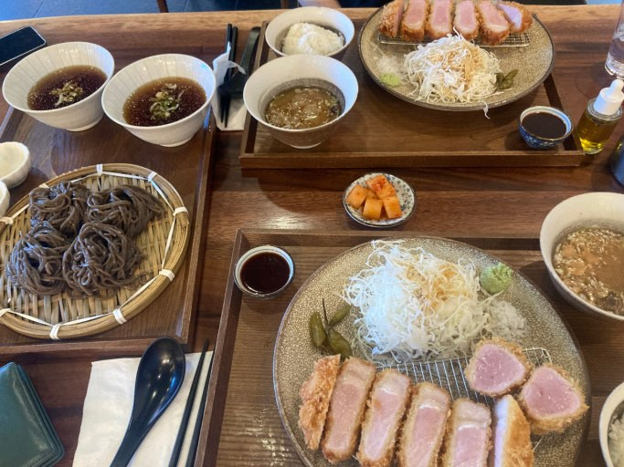
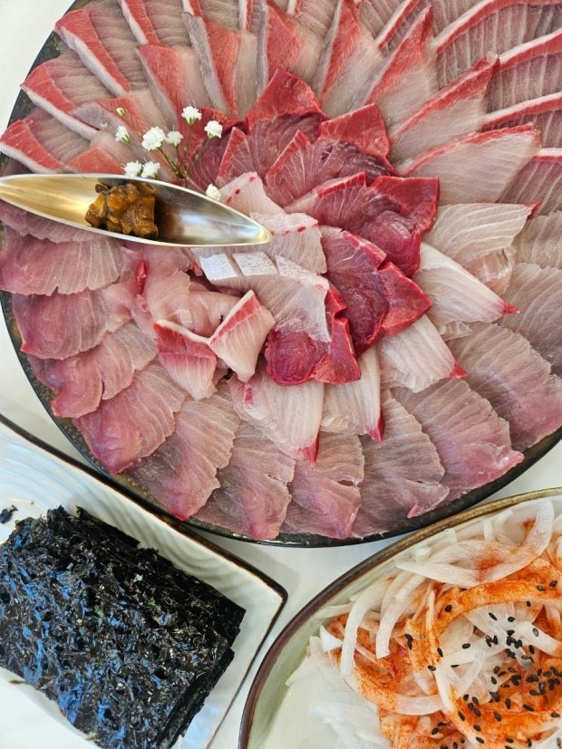
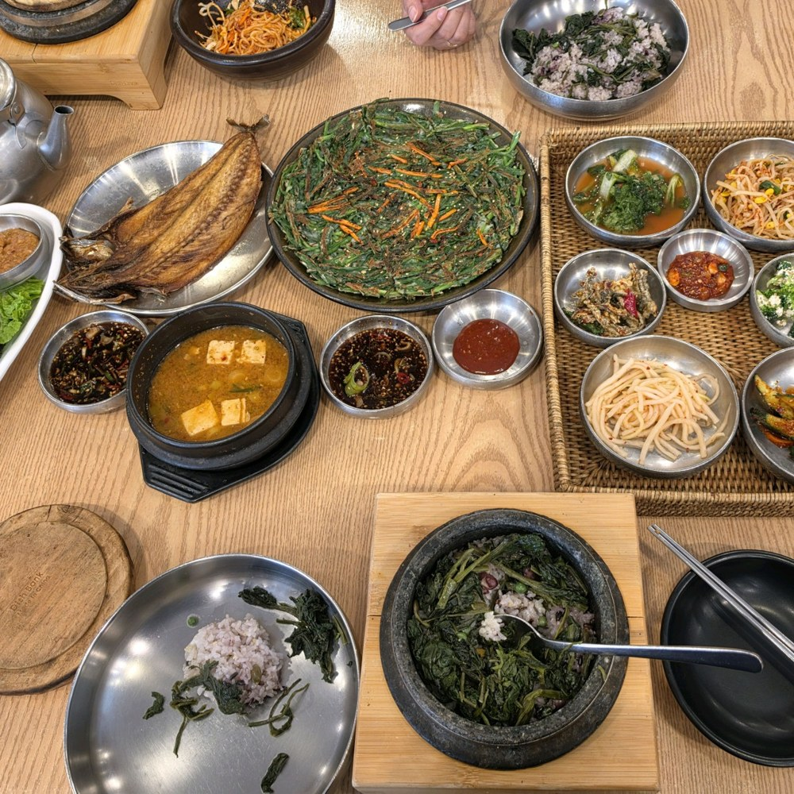

POHANG FOOD MAP
POHANG FOOD MAP
POHANG FOOD MAP
POHANG FOOD MAP
카드를 누르면 해당 식당의 실제 리뷰 페이지로 이동합니다.

“정갈한 한식 한 상으로 포항 여행의 첫 끼를 시작하기 좋은 곳입니다.”

“두툼한 돈카츠를 깔끔하게 즐기고 싶을 때 추천하기 좋은 곳입니다.”

“포항 바다와 잘 어울리는 물회와 회 메뉴를 찾는 사람에게 좋습니다.”

“가족 식사나 모임에도 어울리는 깔끔한 중식 선택지입니다.”

“바다뷰와 디저트를 함께 즐기기 좋은 포항 오션뷰 카페입니다.”

“편안한 분위기에서 정갈한 한식 정식을 먹기 좋은 곳입니다.”